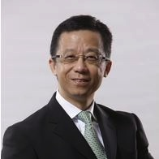

OPENING CEREMONY開幕禮
1 / 6
2pm - 4:30pm
TU201, The Hong Kong Polytechnic University
香港理工大學
主禮嘉賓 Host
Miss Joey Lam, JP 林錦平女士, JP
香港特別行政區副政府資訊科技總監（政策及數碼社會）
Deputy Government Chief Information Officer (GCIO) (Policy and Community), The Government of HKSAR
Charles Mok 莫乃光議員
香港特別行政區立法會資訊科技界議員
Legislative Councillor (IT), Hong Kong SAR
Herman Lam 林向陽先生
香港數碼港管理有限公司行政總裁
Chief Executive Officer, Cyberport
SC Leung
香港互聯網協會主席
Chairman, Internet Society Hong Kong
Allen Yeung 楊德斌先生
香港科技園公司企業拓展及科技支援副總裁
Vice President, Business Development & Technology Support, Hong Kong Science & Technology Parks Corporation
主講嘉賓 Keynote Speakers

王維基先生
WONG Wai-kay,Ricky
香港電視網絡創辦人兼主席
Co-founder and Chairman, Hong Kong Television Network Limited
王維基先生為集團的創辦人和主席。1995 年於香港中文大學取得電子工程學系科學學士學位，並於 2008 年於香港中文大學取得行政管理學碩士。
Mr. Ricky Wong Wai-kay is the co-founder and chairman of the Group. Mr. Wong holds a Bachelor’s Degree in Science in Electronics (1985) and a Master of Business Administration Degree under Executive MBA Programme (2008) from The Chinese University of Hong Kong.
黃岳永
Erwin Huang
CEO, WebOrganic
黃岳永（Erwin Huang），曾任香港謝瑞麟珠寶副主席及執行董事，並在2008年至2010年擔任謝瑞麟珠寶的行政總裁。現為香港社會服務聯會（社聯）全資附屬社會企業「互聯網學習資源中心」「有機上網」的行政總裁。
Erwin is Vice President of Hong Kong Information Technology Federation (HKITF), and founding CEO of WebOrganic. He is a serial entrepreneur and a leader in a social enterprise, the eLearning field. He has extensive experience running from startups to public companies, and social enterprise. He is actively engaged in social services with a view to bridging the digital divide and promoting IT in education and eLearning.
時間表 Rundown
1:45 – 2:00
Registration and networking time
2:00 – 2:20
Introduction on StartLab.HK
Mr. Ben Cheng
Convener, Internet Society Hong Kong
Welcome Address by Hosts
Mr. SC Leung
Chairman, Internet Society Hong Kong (ISOC HK)
Opening Remarks
Miss Joey Lam
Deputy Government Chief Information Officer (Policy and Community), OGCIO
Welcome Address by Hosts
Mr. Herman Lam
CEO,Hong Kong Cyberport Management Company Limited
Welcome Address by Hosts
Ir. Allen Yeung
Vice President, Business Development & Technology Support, Hong Kong Science & Technology Parks Corporation
Speech by Partner Institute and Venue Sponsor
Nick Yang
Executive Vice President, The The Hong Kong Polytechnic University
2:20 – 2:30
Opening Ceremony and Group Photos
2:30 – 3:10
Keynote Speaker – Startup experience sharing
Mr. Ricky Wong
Chairman of Hong Kong Television Network Limited
3:10 – 3:30
Keynote Speaker – Startup experience sharing
Erwin Huang
CEO, Weborganic
3:30 – 4:30
Panel Discussion and Q&A Moderator
Hon. Charles Mok
Legislative Councillor (IT), HKSAR